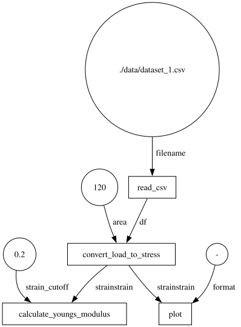

executorlib#
executorlib is a lightweight workflow engine built directly on Python’s standard concurrent.futures interface: instead of a bespoke node/graph API, you submit() plain functions to an executor and get back Future objects, exactly as with concurrent.futures.ThreadPoolExecutor or ProcessPoolExecutor. The same executor interface scales from a single laptop core (SingleNodeExecutor) up to HPC clusters via Flux or SLURM, without changing the workflow code itself. This notebook rebuilds the same workflow.py analysis from python.ipynb with executorlib.
References#
Janssen, J., Taylor, M. G., Yang, P., Neugebauer, J., & Perez, D. (2025). Executorlib – Up-scaling Python workflows for hierarchical heterogenous high-performance computing. Journal of Open Source Software, 10(108), 7782. https://doi.org/10.21105/joss.07782
from concurrent.futures import Future
import executorlib
from workflow import read_csv, calculate_youngs_modulus, convert_load_to_stress, plot
Asynchronous Programming#
executorlib builds on Python’s built-in concurrent.futures.Future: a placeholder for a result that may not be available yet. A Future starts “not done”; once a result is set, done() becomes True and result() returns the value. executorlib’s submit() returns exactly this kind of object, so any code that already understands concurrent.futures immediately understands executorlib.
f = Future()
f.done()
False
f.set_result(5)
f.done()
True
f.result()
5
Workflow#
Submitting a function returns a Future immediately, without blocking; passing that Future as an argument to the next exe.submit() call tells executorlib to wait for it and wire the result in — the dependency graph is implicit in how the futures are passed around, rather than declared explicitly as it was with pyiron_workflow. Because convert_load_to_stress returns a dictionary, executorlib.get_item_from_future() is used to reference a single entry ("stress" or "strain") of a still-pending result.
area = 120
strain_cutoff = 0.2
filename = "./data/dataset_1.csv"
with executorlib.SingleNodeExecutor(cache_directory="./cache") as exe:
# df = read_csv(filename=filename)
df_future = exe.submit(read_csv, filename=filename)
# stress, strain = convert_load_to_stress(df=df, area=area)
convert_future = exe.submit(convert_load_to_stress, df=df_future, area=area)
stress_future = executorlib.get_item_from_future(future=convert_future, key="stress")
strain_future = executorlib.get_item_from_future(future=convert_future, key="strain")
# youngs_modulus = calculate_youngs_modulus(stress=stress, strain=strain, strain_cutoff=strain_cutoff)
youngs_modulus_future = exe.submit(calculate_youngs_modulus, stress=stress_future, strain=strain_future, strain_cutoff=strain_cutoff)
print(youngs_modulus_future.result())
# plot(stress=stress, strain=strain, format="-");
plot_future = exe.submit(plot, stress=stress_future, strain=strain_future, format="-")
plot_future.result()
175.1800847629701

Workflow Graph#
Passing plot_dependency_graph=True visualizes the dependency graph that executorlib inferred from the futures above — the same graph structure that pyiron_workflow.ipynb builds explicitly with a Workflow object.
with executorlib.SingleNodeExecutor(plot_dependency_graph=True) as exe:
df_future = exe.submit(read_csv, filename="./data/dataset_1.csv")
convert_future = exe.submit(convert_load_to_stress, df=df_future, area=area)
stress_future = executorlib.get_item_from_future(future=convert_future, key="stress")
strain_future = executorlib.get_item_from_future(future=convert_future, key="strain")
youngs_modulus_future = exe.submit(calculate_youngs_modulus, stress=stress_future, strain=strain_future, strain_cutoff=strain_cutoff)
plot_future = exe.submit(plot, stress=stress_future, strain=strain_future, format="-")
print(youngs_modulus_future.result())
plot_future.result()
None

High Performance Computing#
Swapping SingleNodeExecutor for SlurmClusterExecutor (or a flux equivalent) submits the exact same tasks as jobs to an HPC scheduler instead of running them locally — the workflow code itself does not change. The cell below is kept as a raw, non-executed cell, since running it requires a SLURM cluster to submit to.
Python Workflow Definition#
As with pyiron_workflow, the submitted tasks can be exported to the engine-agnostic Python Workflow Definition JSON format by passing export_workflow_filename, and reloaded with load_workflow_json(). Compare the workflow.json produced below to the one produced in pyiron_workflow.ipynb: both describe the same graph of plain functions from workflow.py, which is exactly what allows a workflow built with one engine to be executed by the other.
References#
Janssen, J., George, J., Geiger, J., Bercx, M., Wang, X., Ertural, C., Schaarschmidt, J., Ganose, A. M., Pizzi, G., Hickel, T., & Neugebauer, J. (2025). A Python workflow definition for computational materials design. Digital Discovery. https://doi.org/10.1039/d5dd00231a
with executorlib.SingleNodeExecutor(export_workflow_filename="workflow.json") as exe:
df_future = exe.submit(read_csv, filename="./data/dataset_1.csv")
convert_future = exe.submit(convert_load_to_stress, df=df_future, area=area)
stress_future = executorlib.get_item_from_future(future=convert_future, key="stress")
strain_future = executorlib.get_item_from_future(future=convert_future, key="strain")
youngs_modulus_future = exe.submit(calculate_youngs_modulus, stress=stress_future, strain=strain_future, strain_cutoff=strain_cutoff)
plot_future = exe.submit(plot, stress=stress_future, strain=strain_future, format="-")
print(youngs_modulus_future.result())
plot_future.result()
None
!cat workflow.json
{
"version": "0.1.0",
"nodes": [
{
"id": 0,
"type": "function",
"value": "workflow.read_csv"
},
{
"id": 1,
"type": "function",
"value": "workflow.convert_load_to_stress"
},
{
"id": 2,
"type": "function",
"value": "workflow.calculate_youngs_modulus"
},
{
"id": 3,
"type": "function",
"value": "workflow.plot"
},
{
"id": 4,
"type": "input",
"value": "./data/dataset_1.csv",
"name": "filename"
},
{
"id": 5,
"type": "input",
"value": 120,
"name": "area"
},
{
"id": 6,
"type": "input",
"value": 0.2,
"name": "strain_cutoff"
},
{
"id": 7,
"type": "input",
"value": "-",
"name": "format"
},
{
"id": 8,
"type": "output",
"name": "result"
}
],
"edges": [
{
"target": 0,
"targetPort": "filename",
"source": 4,
"sourcePort": null
},
{
"target": 1,
"targetPort": "df",
"source": 0,
"sourcePort": null
},
{
"target": 1,
"targetPort": "area",
"source": 5,
"sourcePort": null
},
{
"target": 2,
"targetPort": "stress",
"source": 1,
"sourcePort": "stress"
},
{
"target": 2,
"targetPort": "strain",
"source": 1,
"sourcePort": "strain"
},
{
"target": 2,
"targetPort": "strain_cutoff",
"source": 6,
"sourcePort": null
},
{
"target": 3,
"targetPort": "stress",
"source": 1,
"sourcePort": "stress"
},
{
"target": 3,
"targetPort": "strain",
"source": 1,
"sourcePort": "strain"
},
{
"target": 3,
"targetPort": "format",
"source": 7,
"sourcePort": null
},
{
"target": 8,
"targetPort": null,
"source": 3,
"sourcePort": null
}
]
}
from python_workflow_definition.executorlib import load_workflow_json
with executorlib.SingleNodeExecutor() as exe:
future = load_workflow_json(file_name="workflow.json", exe=exe)
print(future.result())
175.1800847629701
Summary#
Across these four notebooks the same workflow.py functions were executed as a plain Python module, as a pyiron_workflow graph — inspected either in code or through pyironflow’s graphical interface — and as executorlib futures — first on a laptop and, in principle, on an HPC cluster. The Python Workflow Definition is what ties them together: a single JSON description of a workflow that any compatible engine can read and execute.